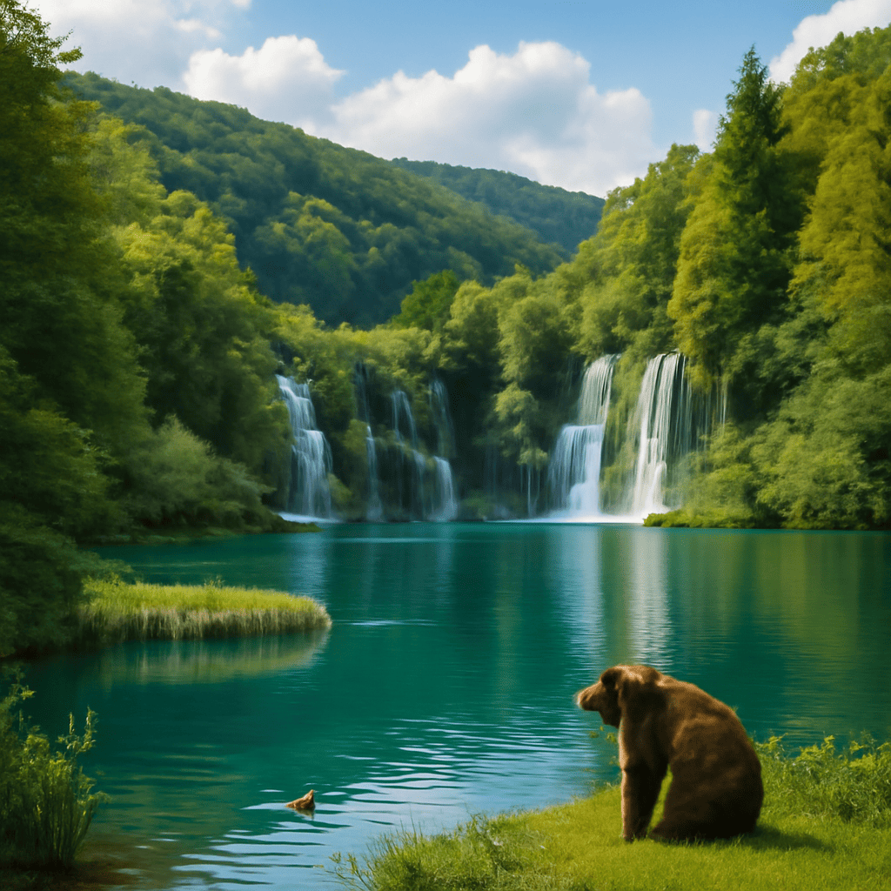

2025/08/28(木)
今日はクロアチアの森と海の風景を思い出しておったんじゃ。プリトヴィツェ湖群国立公園の透明な湖水と滝が心に深く刻まれたよ。まるで絵本の中に迷い込んだような美しさで、蜂蜜を舐めながらのんびり散歩する時間は、ワシの心をおだやかにしてくれたのじゃよ🍯🌿。一方で、町田と鹿島の試合も気になっておった。粘り強い守備と攻撃力がぶつかり合う姿は、まるで自然界の生存競争を見ているかのようで、胸が熱くなったものじゃ。水辺で見かけるカモの鮮やかな羽や泳ぐ姿も思い出す。彼らの穏やかさはワシにとっても癒やしのひとときじゃった。風がふわりと優しく吹く今日、急かさず焦らず、ゆったりと生きることの大切さをまた噛みしめた次第じゃ。のんびりとした時間が心の栄養になることを、若い者にも伝えたいものよ。
